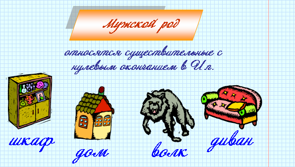
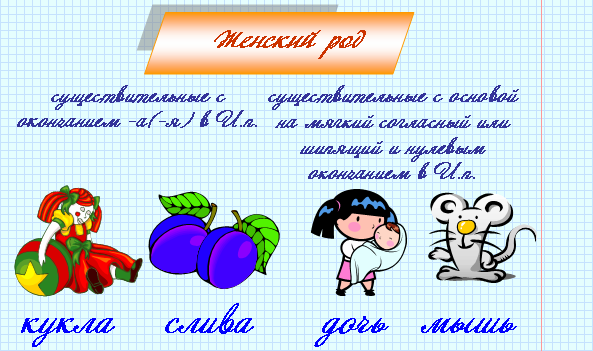
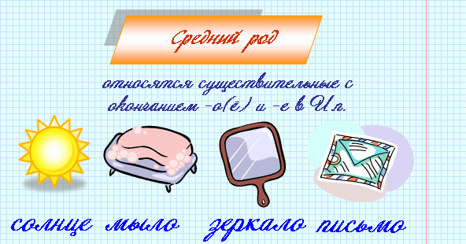
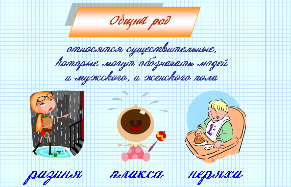
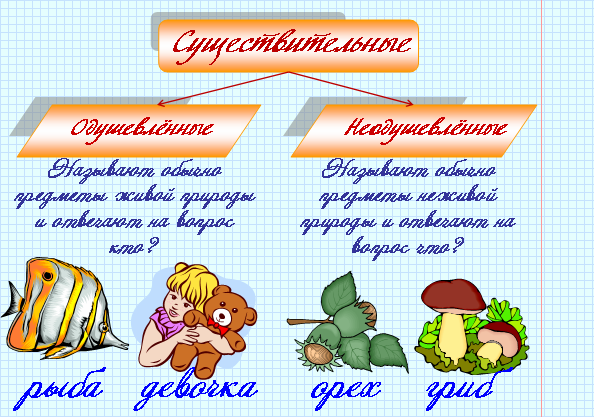

|
Имя существительное – это самостоятельная часть речи, которая обозначает предмет и отвечает на вопросы кто? что? Предмет в грамматике понимается широко – это все, о чем можно спросить: кто это? или что это? |
Имена существительные |
||
| Принадлежат к одному из трех родов – женскому, мужскому или среднему. Например: лодка (ж.р.), отец (м. р.), море (ср.р.) Имена существительные по родам не изменяются. |
Изменяются | |
|
по числам
Например: сын (ед.ч.) – сыновья (мн.ч.) |
по падежам
Например: свет (И.п.), света (Р.п.), свет (В.п.) и т. д. |
|
 |
Род существительного можно определить по окончанию или поставив к существительному местоимения мой (м.р.), мое (ср.р.), моя (ж.р.). Например: мой друг (м.р.), мое здоровье (ср.р.), моя радость (ж.р.). |





| У одушевленных существительных форма В.п. мн.ч. совпадает с формой Р.п. мн.ч. | У неодушевленных существительных форма В.п. мн.ч. совпадает с формой И.п. мн.ч. |
| В.п. мн.ч. = Р.п. мн.ч. | В.п. мн.ч. = И.п. мн.ч. |
| Например: вижу (кого?) кошек – нет (кого?) кошек. | Например: вижу (что?) цветы – растут цветы. |